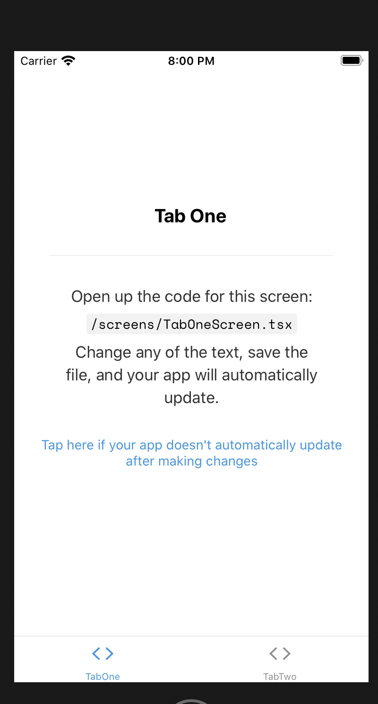

最近 React Native をはじめたので詰まったことを雑多にメモしていこうと思います！ 「react-native header hide」 などで検索すればいくらでも情報が出てくるとは思いますが、情報がふるかったり、expo で作ったアプリケーションにはそのまま適用できなかったりしたので、メモします。
header を出しているのは誰か
expo-cli で作ったアプリの場合、header を表出しているのは react-navigation の StackNavigator です。 おそらく検索結果には StackNavigator で navigator を作るときのオプション指定で header を消すように言われるのではないでしょうか。
const MainNavigation = StackNavigator(
{
otp: { screen: OTPlogin },
otpverify: { screen: OTPverification },
userVerified: {
screen: TabNavigator({
List: { screen: List },
Settings: { screen: Settings },
}),
},
},
{
headerMode: "none",
navigationOptions: {
headerVisible: false,
},
}
)
しかし Hide header in stack navigator React navigationを読む限り、 version 2.0.0-alpha.36 (2019-11-07) 以前の書き方らしく今は使いません。
事実 expo-cli が生成しているコードは
const Stack = createStackNavigator<RootStackParamList>();
function RootNavigator() {
return (
<Stack.Navigator screenOptions={{ headerShown: false }}>
<Stack.Screen name="Root" component={BottomTabNavigator} />
<Stack.Screen name="NotFound" component={NotFoundScreen} options={{ title: 'Oops!' }} />
</Stack.Navigator>
);
}
といった形で、StackNavigator()ではなくcreateStackNavigator()を実行しており、オプションを渡す口がありません。
Navigator の props のオプションで Navigator の表出を管理する
API リファレンスのcreateStackNavigatorには headerMode と headerShown というオプションについての記述があります。 これらは header の表出を制御できるオプションですがheaderModeを読むと表出を細かく管理するために headerShownを使った方が良さそうなので、この headerShown を使っていきます。
で、これをセットすれば header が出なくなるはずなのですが、expo-cli が生成したコードにはそれが含まれていて、その上で header が表出されています。

const Stack = createStackNavigator<RootStackParamList>();
function RootNavigator() {
return (
<Stack.Navigator screenOptions={{ headerShown: false }}>
<Stack.Screen name="Root" component={BottomTabNavigator} />
<Stack.Screen name="NotFound" component={NotFoundScreen} options={{ title: 'Oops!' }} />
</Stack.Navigator>
);
}
ではどうして header が表出しているのでしょうか。
Navigator を入れ子にすると header の設定を上書ける
header が出ている原因は、expo-cli が生成するコードが Navigator を入れ子にしているところにあります。
<Stack.Screen name="Root" component={BottomTabNavigator} /> の BottomTabNavigator から先を読んでいくと、
const BottomTab = createBottomTabNavigator<BottomTabParamList>();
export default function BottomTabNavigator() {
const colorScheme = useColorScheme();
return (
<BottomTab.Navigator
initialRouteName="TabOne"
tabBarOptions={{ activeTintColor: Colors[colorScheme].tint }}
>
<BottomTab.Screen
name="TabOne"
component={TabOneNavigator}
options={{
tabBarIcon: ({ color }) => (
<TabBarIcon name="ios-code" color={color} />
),
}}
/>
<BottomTab.Screen
name="TabTwo"
component={TabTwoNavigator}
options={{
tabBarIcon: ({ color }) => (
<TabBarIcon name="ios-code" color={color} />
),
}}
/>
</BottomTab.Navigator>
);
}
function TabBarIcon(props: { name: string; color: string }) {
return <Ionicons size={30} style={{ marginBottom: -3 }} {...props} />;
}
const TabOneStack = createStackNavigator<TabOneParamList>();
function TabOneNavigator() {
return (
<TabOneStack.Navigator>
<TabOneStack.Screen
name="TabOneScreen"
component={TabOneScreen}
options={{ headerTitle: "Tab One Title" }}
/>
</TabOneStack.Navigator>
);
}
const TabTwoStack = createStackNavigator<TabTwoParamList>();
function TabTwoNavigator() {
return (
<TabTwoStack.Navigator>
<TabTwoStack.Screen
name="TabTwoScreen"
component={TabTwoScreen}
options={{ headerTitle: "Tab Two Title" }}
/>
</TabTwoStack.Navigator>
);
}
というファイルがあります。
ここで各スクリーンに紐づく Navigation を定義していますが、
const TabOneStack = createStackNavigator<TabOneParamList>();
function TabOneNavigator() {
return (
<TabOneStack.Navigator>
<TabOneStack.Screen
name="TabOneScreen"
component={TabOneScreen}
options={{ headerTitle: "Tab One Title" }}
/>
</TabOneStack.Navigator>
);
}
とあるとおり、StackNavigator を入れ子にしていたことがわかります。 header を消すためにはここにも headerShown の props を書いてあげる必要があります。
function TabOneNavigator() {
return (
<TabOneStack.Navigator screenOptions={{ headerShown: false }}>
<TabOneStack.Screen
name="TabOneScreen"
component={TabOneScreen}
options={{ headerTitle: "Tab One Title" }}
/>
</TabOneStack.Navigator>
);
とすれば無事 header を消すことができます。

Navigator を入れ子にしたときの挙動
expo-cli が生成したコードに似たコードが 公式 Docs の Guides のNesting navigatorsにあります。 Nesting multiple stack navigatorsがまさしくそうで、
When nesting multiple stacks, React Navigation will automatically hide the header from the child stack navigator in order to avoid showing duplicate headers. However, depending on the scenario, it might be more useful to show the header in the child stack navigator instead and hide the header in the parent stack navigator.
とあるように入れ子の親の header 名を隠す方法として紹介されています。
そして Each screen in a navigator has its own paramsとあるとおり、子の screen は独立して header の設定を持つので、header は表出されます。なぜなら headershown の設定は
Whether to show the header. The header is shown by default unless
headerModewas set tonone.
とある通り明示的に false にしないと隠せないからです。
そのため header を隠すために隠したい Screen は明示的に false を設定する必要がありました。
まとめ
- react-native で header を隠す方法が v4 と v5 で違うので検索結果がそのまま使えないかも
- expo-cli の生成するコードは Navigator を nest しているので v5 の書き方を採用しても header は書き換わらない(というより隠す設定が標準でされているが隠れない)
- 入れ子の内側にも headerShown を設定すると隠せる